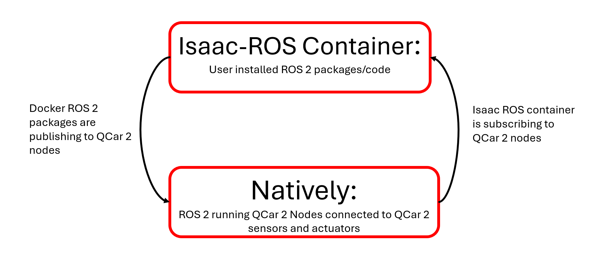
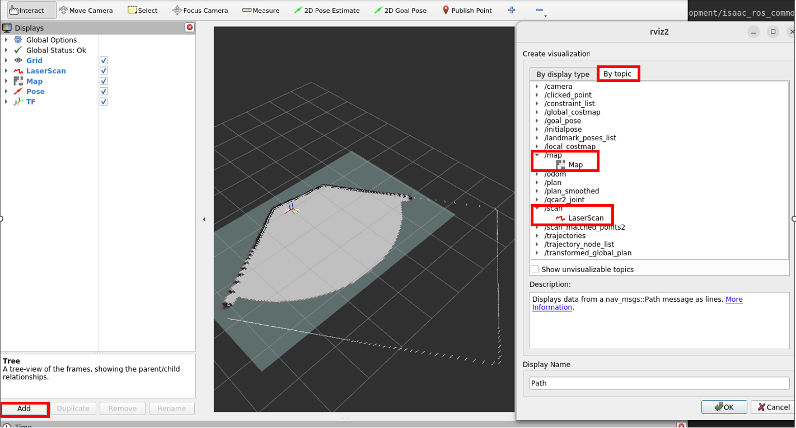
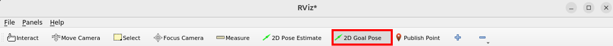

Physical Stage ROS Software Setup
Please go through the following steps to set up a QCar 2 with the necessary resources to run the ROS development environment.
Description
This document describes:
- System Requirements
- Downloading the ROS Competition Resources
- Setting Up the Isaac-ROS (Development) Container
- How to Run the ROS2 Humble Nodes with the Isaac-ROS Container
- Running Nav2
By the end of this document, you will have a QCar that is setup to run Nav2 using the Isaac-ROS (Development) container in the below software architecture:

System Requirements
Hardware Requirements:
- QCar 2
Software Warning:
If you plan on changing any native packages on the QCar 2, consult the Software sections at the bottom of the following page: QCar 2 QUARC Documentation
Docker Check:
Docker should be installed by default on the QCar 2. Please check that it is by running the following command:
docker run hello-world
Make sure your QCar 2 is connected to the internet. You should see a Hello from Docker somewhere in the output. If this does not work, please raise an issue on the Github.
To remove this container use the following commands:
docker ps -a
docker rm <CONTAINER ID of hello-world>
Downloading the ROS Competition Resources
The below instructions are inteded to be run on the QCar:
-
Download the setup_qcar2.py file

-
Run the
setup_qcar2.pyfile from the downloads folder
After running the file, the QCar should have the following folder structure:
/home/$USER/Documents/ACC_Development/
L Development/
L isaac_ros_common/
L docker/
L backup/
Setting Up the Isaac-ROS (Development) Container
For developing your ROS solution Isaac-ROS container is utilized. This container will communicate with the ROS-Humble nodes running natively on the QCar. Please follow the below steps to set the container up correctly:
Note: Isaac ROS is already installed on the QCar 2. You will only need to install the Nvidia Container Toolkit.
-
To get started please install Nvidia-Container-toolkit using their instructions
NOTE: Make sure you install the Debian-based installation for the toolkit. And, do not set up the experimental packages repo.
During the installation of the
nvidia-container-toolkityou may receive an error that thenvidia-container-toolkit-basepackage is missing. Please install it manually using the following command:bash sudo apt install nvidia-container-toolkit-base -
Configure Your Docker. You can ignore the Rootless Mode instructions.
NOTE: You may need to add your local user to the local Docker Group. Please restart your machine once your user has been added.
How to Run the ROS2 Humble Nodes with the Isaac-ROS Container
Follow the below steps to run the ROS2 Humble Nodes natively on the QCar 2 and have the Isaac-ROS container running RViz to visualize some topics.
-
Open a terminal and source ROS2 Humble in the native OS:
bash source /opt/ros/humble/setup.bash -
Transfer the ROS nodes and interfaces into the ros2 directory:
bash cp -r -u /home/$USER/Documents/ACC_Development/Development/ros2/src /home/$USER/ros2 -
Make sure Python 3.8 is being used to build the nodes:
bash PYTHONPATH=$PYTHONPATH:/usr/local/lib/python3.8/dist-packages -
Navigate to the ros2 folder and build the nodes:
bash cd /home/$USER/ros2 colcon buildThere may be some warnings, but these can be ignored.
-
Copy the compiled ROS nodes and interfaces to the container so that the Isaac-ros container has access to the messages the QCar nodes are using:
bash cp -r ~/ros2/install/ ~/Documents/ACC_Development/Development -
Source the recently compiled ROS packages:
bash source install/setup.bash -
Run the nodes using the following command:
bash ros2 launch qcar2_nodes qcar2_launch.py
<-----From this point forward you will be operating in the Isaac-ROS Container---->
-
Open an Isaac-ROS container in a NEW terminal using the following commands:
bash cd /home/$USER/Documents/ACC_Development/isaac_ros_common ./scripts/run_dev.sh /home/$USER/Documents/ACC_Development/DevelopmentNote: To open additional terminals, run the above 2 commands in a new terminal.
-
Source ROS
bash source install/setup.bash -
Open RViz2:
bash rviz2 -
Add 'By Topic' relevant topics such as
/laserscan. For/laserscan, switch the Fixed frame in Global options tobase_scanby typing it in.
Running Nav2
The following steps will assume you have 1 terminal connected to the Isaac-ROS container (Development Terminal) and 1 regular terminal (Native Terminal) that has sourced ROS Humble and the built packages:
-
Run the Nav2 launch file in the Native Terminal.
bash source /opt/ros/humble/setup.bash cd /home/$USER/ros2 source install/setup.bash ros2 launch qcar2_nodes qcar2_slam_and_nav_bringup_launch.py
Now the Development Terminal will be used.
cd /home/$USER/Documents/ACC_Development/isaac_ros_common
./scripts/run_dev.sh /home/$USER/Documents/ACC_Development/Development
-
Source ROS
bash source install/setup.bash -
Open
rviz2in the Development Terminal.bash rviz2 -
Switch the Fixed frame in Global options to
base_scanby typing it in. -
Add the following topics to the Display. Click on
addin the bottom left ofrviz2.TFwill be underBy display type.LaserScanandMapwill be underBy topic.
bash Display L TF L LaserScan L Map
-
In
rviz2select the2D Goal Pose.
-
Click and drag within the gridded area to set the goal pose and orientation. A green arrow should appear and show your selection.